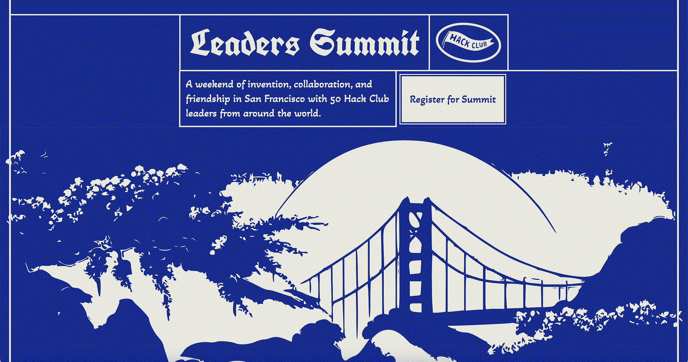

Journeys @
(2023-2024)
Home / Summit-Much-More-Responsibility
Summit! I loved organizing this event with Dev. My goal for this event is I wanted to create friendships between clubs to create a sort of "Clubs Community" where leaders are able to make things for each other instead of it being just HQ making things for clubs (I'm just one person haha). I think we achieved that. After the Summit, people like Peter hosted monthly leader calls & on those calls it felt like everyone was a friend because many of them had met at The Summit & had a great adventure together.I really enjoyed making the design for this event. From the website, to a scroll invitation, to an embroidered hoodie design, it was really fun being able to express this particular aesthetic that I made for Summit in a bunch of mediums.

Thanks to Fayd for implementing my Figma design and turning it into summit.hackclub.com
Our event also happened to take place over the Lunar New Year and many of the attendees who were giving up their traditional celebrations to come to the event decided to bring traditions of the holiday to Summit!
The event had a budget of $50k & we were about 4k underbudget by the end. You can learn some more about The Summit @ https://github.com/hackclub/summit
Hack Club Summit Documentary: https://youtu.be/UZEm5lONg7g?feature=shared
If I could do one thing different about Summit, it's that I would have taken more risks. I took a bunch of inspiration from Epoch & Assemble, and the event felt a lot like those events. I think all of the attendees really enjoyed it & I think their clubs benefitted from it, but I do not think it is a wild experience that they will remember 10-15 years later. I'll never forget Epoch because I do not think I'll ever have an experience like that again. I think for Trail I finally reached that point where Trail is something that I think attendees will never forget (hiking with PCT at 14-17yrs old with 30 other teenagers from around the world for 7 days with circuit boards that they made... yeah that was a pretty unforgettable experience & I think the people on that trip will be bound together by life because of the experience).